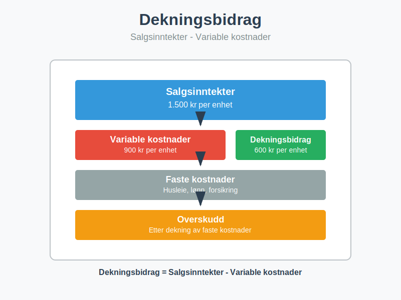
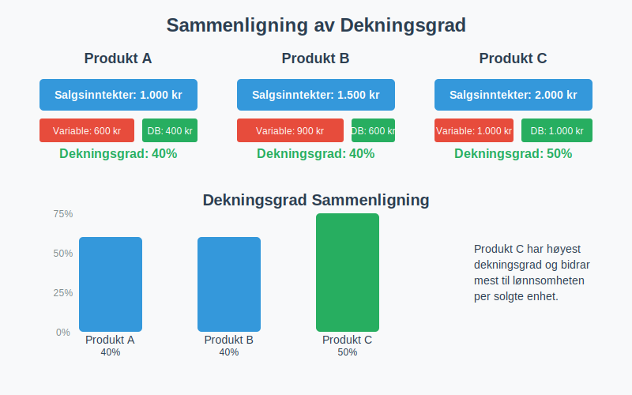
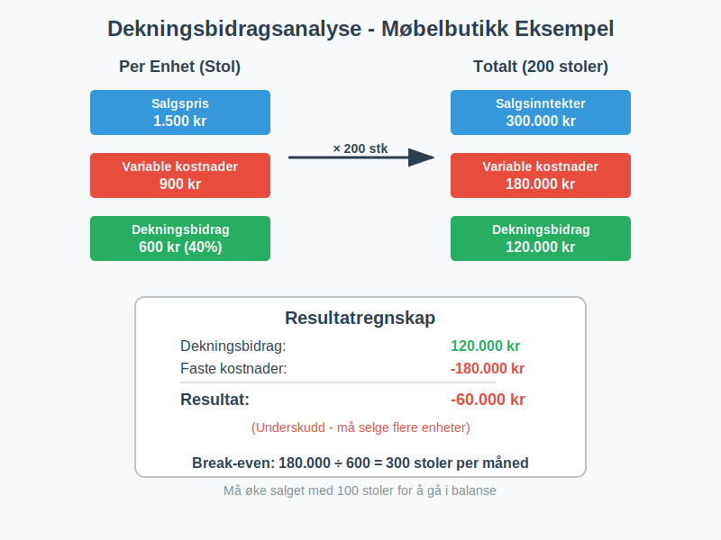
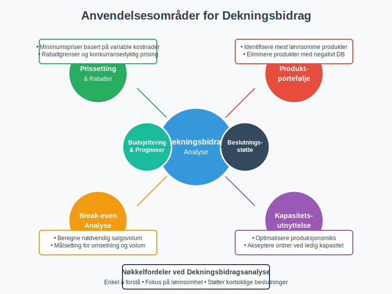

Dekningsbidrag er differansen mellom salgsinntekter og variable kostnader. Det viser hvor mye hver solgte enhet bidrar til å dekke faste kostnader og generere overskudd, og er et grunnleggende verktøy for lønnsomhetsanalyse i regnskapet.

Hva er Dekningsbidrag?
Dekningsbidrag er en nøkkelindikator som viser hvor mye inntekt som gjenstår etter at variable kostnader er trukket fra. Dette beløpet skal dekke:
- Faste kostnader som husleie, lønn og forsikring. For mer om faste kostnader, se Faste kostnader.
- Overskudd som gir avkastning til eierne
- Investeringer i fremtidig vekst og utvikling
Grunnleggende Formel
Dekningsbidrag = Salgsinntekter - Variable kostnader
Dekningsgrad (Dekningsbidragsprosent)
Dekningsgraden uttrykker dekningsbidraget som en prosentandel av salgsinntektene:
Dekningsgrad = (Dekningsbidrag ÷ Salgsinntekter) × 100%

Variable vs. Faste Kostnader
For å beregne dekningsbidrag korrekt, må vi skille mellom variable og faste kostnader.
Variable Kostnader
Variable kostnader endrer seg proporsjonalt med produksjons- eller salgsvolum og utgjør en viktig del av driftskostnadene og kostprisen:
- Råvarer og materialer
- Direkte lønn (timelønn for produksjon)
- Provisjoner til selgere
- Frakt og leveringskostnader
- Emballasje og pakking
Faste Kostnader
Faste kostnader forblir konstante uavhengig av volum på kort sikt og utgjør en betydelig del av driftskostnadene:
- Husleie og eiendomskostnader
- Fast lønn til administrasjon
- Forsikringer og avgifter
- Avskrivninger på utstyr
- Lisenser og abonnementer
Praktisk Eksempel: Dekningsbidragsberegning
La oss se på et praktisk eksempel med en bedrift som selger møbler:
Grunndata
- Salgspris per stol: 1.500 kr
- Variable kostnader per stol: 900 kr
- Månedlige faste kostnader: 180.000 kr
- Solgte stoler per måned: 200 stk
Beregning
| Element | Per enhet | Totalt (200 stk) |
|---|---|---|
| Salgsinntekter | 1.500 kr | 300.000 kr |
| Variable kostnader | 900 kr | 180.000 kr |
| Dekningsbidrag | 600 kr | 120.000 kr |
| Dekningsgrad | 40% | 40% |
Resultatregnskap:
- Dekningsbidrag: 120.000 kr
- Faste kostnader: 180.000 kr
- Resultat: -60.000 kr (underskudd)

Break-Even Analyse
Break-even punktet (også kalt dekningspunkt) viser hvor mange enheter som må selges for å dekke alle kostnader.
Break-Even Formel
Break-even volum = Faste kostnader ÷ Dekningsbidrag per enhet
Eksempel: Break-Even Beregning
Med data fra eksemplet over:
- Faste kostnader: 180.000 kr
- Dekningsbidrag per stol: 600 kr
Break-even volum: 180.000 ÷ 600 = 300 stoler per måned
Break-Even i Kroner
Break-even omsetning = Faste kostnader ÷ Dekningsgrad
Break-even omsetning: 180.000 ÷ 0,40 = 450.000 kr per måned
For en mer detaljert analyse av nullpunktsomsetning, se vår omfattende guide som dekker beregningsmetoder, optimalisering og praktiske anvendelser.

Dekningsbidragsanalyse for Flere Produkter
Når bedriften selger flere produkter, må dekningsbidraget beregnes for hvert produkt separat.
Eksempel: Møbelbutikk med Tre Produkter
| Produkt | Salgspris | Variable kostnader | Dekningsbidrag | Dekningsgrad | Solgt volum | Totalt dekningsbidrag |
|---|---|---|---|---|---|---|
| Stoler | 1.500 kr | 900 kr | 600 kr | 40% | 200 stk | 120.000 kr |
| Bord | 3.000 kr | 1.800 kr | 1.200 kr | 40% | 100 stk | 120.000 kr |
| Skap | 5.000 kr | 2.500 kr | 2.500 kr | 50% | 50 stk | 125.000 kr |
| Totalt | - | - | - | 43% | - | 365.000 kr |
Produktmiks Analyse
Selv om stoler og bord har samme dekningsgrad (40%), bidrar skap mest til lønnsomheten med:
- Høyest dekningsbidrag per enhet: 2.500 kr
- Høyest dekningsgrad: 50%
Anvendelse av Dekningsbidrag
1. Prissetting
Dekningsbidrag hjelper med å sette riktige priser:
- Minimumspris = Variable kostnader + ønsket dekningsbidrag
- Konkurransedyktig prising basert på dekningsgrad
- Rabattgrenser uten å gå under variable kostnader
2. Produktportefølje Beslutninger
Dekningsbidragsanalyse viser hvilke produkter som:
- Bidrar mest til lønnsomheten
- Bør prioriteres i markedsføring
- Kan elimineres hvis dekningsbidraget er negativt
3. Kapasitetsutnyttelse
Ved ledig kapasitet kan bedriften:
- Akseptere ordrer til priser over variable kostnader
- Fokusere på produkter med høyest dekningsbidrag per flaskehals
- Optimalisere produksjonsmiksen
4. Budsjettering og Prognoser
Dekningsbidrag brukes til:
- Resultatprognoser ved ulike salgsvolum
- Scenarioanalyser for best/verst case
- Målsetting for salgsvolum og omsetning

Begrensninger ved Dekningsbidragsanalyse
1. Kostnadskategorisering
- Blandet kostnader kan være vanskelige å klassifisere
- Trinnvise kostnader endrer seg ved visse volumnivåer
- Tidshorisont påvirker om kostnader er faste eller variable
2. Forutsetninger
Dekningsbidragsanalyse forutsetter:
- Lineære sammenhenger mellom volum og kostnader
- Konstante priser og kostnader per enhet
- Uendret produktmiks ved volumendringer
3. Kortsiktig Perspektiv
- Fokuserer på kortsiktige beslutninger
- Tar ikke hensyn til langsiktige konsekvenser
- Kan føre til underinvestering i faste kostnader
Dekningsbidrag vs. Bruttofortjeneste
| Aspekt | Dekningsbidrag | Bruttofortjeneste |
|---|---|---|
| Definisjon | Inntekter - Variable kostnader | Inntekter - Varekostnader |
| Fokus | Kostnadsadferd (fast/variabel) | Handelsmarginer |
| Anvendelse | Lønnsomhetsanalyse, break-even | Handelsbedrifter, marginer |
| Kostnader | Alle variable kostnader | Kun direkte varekostnader |
Regnskapsføring og Rapportering
Intern Rapportering
Dekningsbidrag brukes primært i intern rapportering:
- Månedlige resultatrapporter per produktlinje
- Lønnsomhetsanalyser per kunde eller marked
- Beslutningsunderlag for ledelsen
Eksempel: Dekningsbidragsregnskap
RESULTATREGNSKAP - DEKNINGSBIDRAGSFORMAT
Salgsinntekter 1.000.000 kr
Variable kostnader:
- Råvarer -300.000 kr
- Direkte lønn -200.000 kr
- Provisjoner -50.000 kr
- Frakt -30.000 kr
Totale variable kostnader -580.000 kr
-----------
DEKNINGSBIDRAG 420.000 kr
Dekningsgrad 42%
Faste kostnader:
- Lønn administrasjon -150.000 kr
- Husleie -80.000 kr
- Avskrivninger -40.000 kr
- Andre faste kostnader -50.000 kr
Totale faste kostnader -320.000 kr
-----------
DRIFTSRESULTAT 100.000 kr
Avanserte Dekningsbidragskonsepter
1. Dekningsbidrag per Flaskehals
Når produksjonskapasiteten er begrenset:
Dekningsbidrag per flaskehals = Dekningsbidrag ÷ Tid på flaskehals
2. Kumulativt Dekningsbidrag
For produkter med felles faste kostnader:
- Beregn dekningsbidrag per produkt
- Ranger produkter etter dekningsgrad
- Akkumuler dekningsbidrag til faste kostnader er dekket
3. Segmentert Dekningsbidragsanalyse
Analyser dekningsbidrag på ulike nivåer:
- Produktnivå: Individuelle produkter
- Produktlinjenivå: Grupper av relaterte produkter
- Divisjonsnivå: Forretningsområder
- Bedriftsnivå: Hele organisasjonen

Digitale Verktøy for Dekningsbidragsanalyse
Excel og Regneark
- Dynamiske modeller med scenarioanalyse
- Grafisk fremstilling av break-even punkter
- Sensitivitetsanalyse for nøkkelvariabler
ERP-systemer
Moderne regnskapssystemer tilbyr:
- Automatisk kostnadskategorisering
- Sanntids dekningsbidragsrapporter
- Integrert budsjett- og prognosefunksjonalitet
Business Intelligence
- Dashboards med nøkkeltall
- Trendanalyser over tid
- Komparativ analyse mellom produkter/perioder
Konklusjon
Dekningsbidrag er et fundamentalt verktøy for lønnsomhetsanalyse som gir verdifull innsikt i:
- Produktlønnsomhet og prissetting
- Break-even analyse og volumkrav
- Kapasitetsutnyttelse og produksjonsmiks
- Kortsiktige beslutninger om ordreaksept
Ved å forstå sammenhengen mellom variable kostnader, faste kostnader og dekningsbidrag, kan bedrifter ta mer informerte beslutninger om prissetting, produktportefølje og ressursallokering.
For optimal anvendelse bør dekningsbidragsanalyse kombineres med andre regnskapsverktøy som bruttofortjeneste, budsjettering og avskrivningsanalyse for å gi et helhetlig bilde av bedriftens økonomiske situasjon.